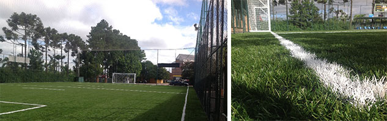
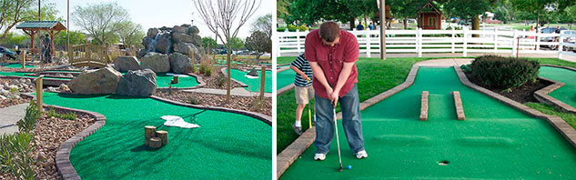

Grama sintética para Futebol
A grama sintética para futebol é padrão hoje, os clubes profissionais de futebol buscam cada vez mais se adequar a essa nova era, escolher construir um campo em grama sintética faz parte de uma lógica financeira com um retorno a curto prazo, onde a grama acaba se pagando por causa da baixa manutenção, custos que envolveriam a manutenção na grama natural se extinguem.

Um campo de grama natural precisa de um tempo para recuperar-se após algumas seções de jogos, isso significa que o investidor precisa de mais de um campo de futebol em grama natural para manter seu faturamento. Mas em um campo de futebol em grama sintética pode-se jogar o ano todo continuamente sem medo de agredir ou deteriorar, claro isso usando uma grama de qualidade como no padrão Futgrass.
A qualidade de nossa grama pode ser vista nos campos de nossos clientes, que já somam anos e mantem seu vigor mesmo após muito uso.
Temos uma grama exclusiva no mercado, a nossa grama sintética aprovada pela FIFA é importada, com este padrão internacional é como atendemos nossos clientes, hoje a Futgrass é a única empresa no mercado nacional que oferece 5 anos de garantia.
A Futgrass – Construções Esportivas participa do projeto desde o início construímos ginásios de esportes, desde sua base até a iluminação, eliminando a necessidade de se trabalhar com várias empresas comprometendo a qualidade da entrega do produto final. Uma só empresa faz tudo e entrega todo o projeto no mesmo padrão, desde sua planta até a entrega preparada para iniciar os jogos.
Grama sintética para Tênis
Clubes de tênis ou mini tênis o cada vez mais optam por quadras de tênis com grama sintética. Os benefícios são óbvios em comparação com a grama natural. A grama sintética Futgrass requer pouca manutenção. Não é necessário ficar arrumando o gramado depois de cada jogo.
A grama sintética Futgrass aprovada pelos órgãos reguladores do Tênis proporciona uma sensação única ao jogar, com padrão internacional sua quadra poderá suportar jogos profissionais e campeonatos.
A grama sintética proporciona um jogo de tênis fluido e muito competitivo, em entrevista com atletas profissionais 80% preferem quadras em grama sintética, um dos motivos é que evita se machucar em caso de quedas ou ao pular para uma bola mais difícil.
Uma das vantagens de uma quadra de tênis com grama sintética é o sistema de drenagem, é fato que mesmo depois de uma forte tormenta a quadra com a grama artificial Futgrass são jogáveis quase que imediatamente, devido ao sistema de drenagem que empregamos nas quadras.
O piso ainda é uma das superfícies mais populares em quadras de tênis isso é fato, mas isso está mudando e são inúmeras as quadras de tênis com grama sintética e inclusive sendo usadas para campeonatos profissionais, por que a grama sintética emula a sensação do piso com perfeição e proporcionam ainda mais segurança ao atleta por ter um sistema de absorção de impacto.
Grama sintética para Golfe
A Futgrass oferece a melhor solução do mercado, a melhor grama sintética para Golfe com padrão internacional, temos uma equipe especializada para oferecer simplesmente o melhor serviço com o qual seu projeto almeja. Com parcerias exclusivas de fornecedores experientes e instaladores profissionais, podemos oferecer uma variedade inigualável de sistemas de gramado sintético para golfe.
O nosso objetivo principal é prover o mercado de golfe através de nossos distribuidores selecionados, entregando uma alta qualidade de produtos de grama sintética.
Entregamos apenas grama sintética importada para golfe a qual de cumpre exigências muito específicas, como resistência, absorção de impacto e estabilidade. A Futgrass desenvolveu no decorrer dos anos um sistema exclusivo que atende todas essas características.
Sabemos que um campo de golfe tem alguns lugares muito específicos onde se desgastam primeiro, e foi pensando assim que nossa técnica de instalação reforça essas áreas pensando no futuro de seu campo de golfe. Nosso gramado suporta cargas exaustivas de jogos sem problemas.
Fifa Quality Concept
Acompanhamento
- Fique inteirado quanto á sua Obra, seu vendedor ficara a disposição para qualquer dúvida de planejamento.
- É importante para nós que o cliente acompanhe de perto o desenrrolar do seu projeto, mas não se preocupe. Cuidamos de tudo!